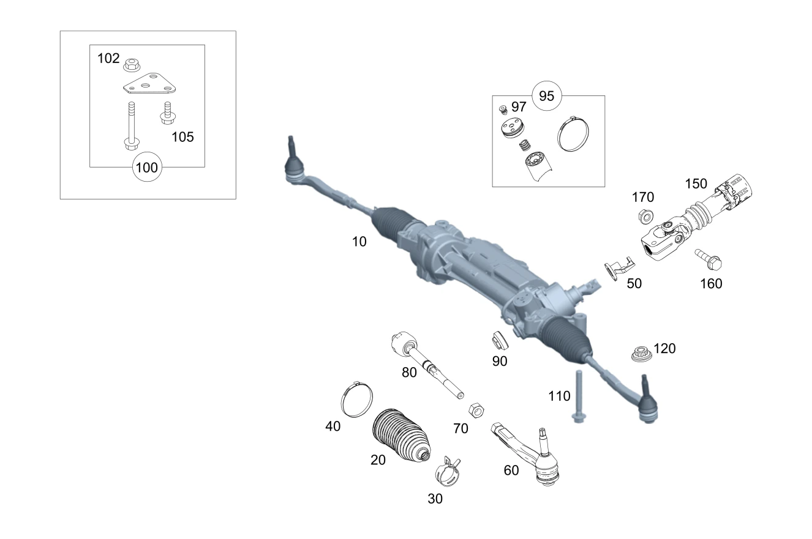

| № | Артикул | Название | Кол. | Примечание | Ограничение |
|---|---|---|---|---|---|
| 10 | A 205 460 76 00 | Рулевой механизм (STEERING GEAR) | 1 | Рулевое управление: Влево [697] ДЕТАЛЬ ПОСТАВЛЯЕТСЯ ТОЛЬКО/ИЛИ ТАКЖЕ КАК ЗАП.ЧАСТЬ | ME04/ME06 |
| 10 | A 205 460 26 01 | Рулевой механизм (STEERING GEAR) | 1 | Рулевое управление: Влево [697] ДЕТАЛЬ ПОСТАВЛЯЕТСЯ ТОЛЬКО/ИЛИ ТАКЖЕ КАК ЗАП.ЧАСТЬ | ME04/ME06 |
| 10 | A 205 460 87 00 | Рулевой механизм (STEERING GEAR) | 1 | Рулевое управление: Влево [672] ДЕТАЛЬ ПОСЛЕ УСТАН.ПРОВЕРИТЬ НА АКТУАЛЬНОСТЬ "ПРОШИВНОГО" ПО [697] ДЕТАЛЬ ПОСТАВЛЯЕТСЯ ТОЛЬКО/ИЛИ ТАКЖЕ КАК ЗАП.ЧАСТЬ | ME04/ME06 |
| 10 | A 205 460 88 00 | Рулевой механизм (STEERING GEAR) | 1 | Рулевое управление: Вправо [672] ДЕТАЛЬ ПОСЛЕ УСТАН.ПРОВЕРИТЬ НА АКТУАЛЬНОСТЬ "ПРОШИВНОГО" ПО [697] ДЕТАЛЬ ПОСТАВЛЯЕТСЯ ТОЛЬКО/ИЛИ ТАКЖЕ КАК ЗАП.ЧАСТЬ | (ME04/ME06)+806 |
| 10 | A 205 460 41 01 | Рулевой механизм (STEERING GEAR) | 1 | Рулевое управление: Влево [672] ДЕТАЛЬ ПОСЛЕ УСТАН.ПРОВЕРИТЬ НА АКТУАЛЬНОСТЬ "ПРОШИВНОГО" ПО [697] ДЕТАЛЬ ПОСТАВЛЯЕТСЯ ТОЛЬКО/ИЛИ ТАКЖЕ КАК ЗАП.ЧАСТЬ | ME04/ME06 |
| 10 | A 205 460 53 02 | Рулевой механизм (STEERING GEAR) | 1 | Рулевое управление: Влево [672] ДЕТАЛЬ ПОСЛЕ УСТАН.ПРОВЕРИТЬ НА АКТУАЛЬНОСТЬ "ПРОШИВНОГО" ПО [697] ДЕТАЛЬ ПОСТАВЛЯЕТСЯ ТОЛЬКО/ИЛИ ТАКЖЕ КАК ЗАП.ЧАСТЬ | ME04/ME06 |
| 10 | A 205 460 42 01 | Рулевой механизм (STEERING GEAR) | 1 | Рулевое управление: Вправо [672] ДЕТАЛЬ ПОСЛЕ УСТАН.ПРОВЕРИТЬ НА АКТУАЛЬНОСТЬ "ПРОШИВНОГО" ПО [697] ДЕТАЛЬ ПОСТАВЛЯЕТСЯ ТОЛЬКО/ИЛИ ТАКЖЕ КАК ЗАП.ЧАСТЬ | (ME04/ME06)+(806+056) |
| 10 | A 205 460 77 00 | Рулевой механизм (STEERING GEAR) | 1 | Рулевое управление: Вправо [697] ДЕТАЛЬ ПОСТАВЛЯЕТСЯ ТОЛЬКО/ИЛИ ТАКЖЕ КАК ЗАП.ЧАСТЬ | ME04/ME06 |
| 10 | A 205 460 27 01 | Рулевой механизм (STEERING GEAR) | 1 | Рулевое управление: Вправо [697] ДЕТАЛЬ ПОСТАВЛЯЕТСЯ ТОЛЬКО/ИЛИ ТАКЖЕ КАК ЗАП.ЧАСТЬ | ME04/ME06 |
| 10 | A 205 460 88 00 | Рулевой механизм (STEERING GEAR) | 1 | Рулевое управление: Вправо [672] ДЕТАЛЬ ПОСЛЕ УСТАН.ПРОВЕРИТЬ НА АКТУАЛЬНОСТЬ "ПРОШИВНОГО" ПО [697] ДЕТАЛЬ ПОСТАВЛЯЕТСЯ ТОЛЬКО/ИЛИ ТАКЖЕ КАК ЗАП.ЧАСТЬ | (ME04/ME06)+806 |
| 10 | A 205 460 91 00 | Рулевой механизм (STEERING GEAR) | 1 | Рулевое управление: Влево [672] ДЕТАЛЬ ПОСЛЕ УСТАН.ПРОВЕРИТЬ НА АКТУАЛЬНОСТЬ "ПРОШИВНОГО" ПО [697] ДЕТАЛЬ ПОСТАВЛЯЕТСЯ ТОЛЬКО/ИЛИ ТАКЖЕ КАК ЗАП.ЧАСТЬ | ((ME04/ME06)+486)+806 |
| 10 | A 205 460 42 01 | Рулевой механизм (STEERING GEAR) | 1 | Рулевое управление: Вправо [672] ДЕТАЛЬ ПОСЛЕ УСТАН.ПРОВЕРИТЬ НА АКТУАЛЬНОСТЬ "ПРОШИВНОГО" ПО [697] ДЕТАЛЬ ПОСТАВЛЯЕТСЯ ТОЛЬКО/ИЛИ ТАКЖЕ КАК ЗАП.ЧАСТЬ | ME04/ME06 |
| 10 | A 205 460 57 02 | Рулевой механизм (STEERING GEAR) | 1 | Рулевое управление: Вправо [672] ДЕТАЛЬ ПОСЛЕ УСТАН.ПРОВЕРИТЬ НА АКТУАЛЬНОСТЬ "ПРОШИВНОГО" ПО [697] ДЕТАЛЬ ПОСТАВЛЯЕТСЯ ТОЛЬКО/ИЛИ ТАКЖЕ КАК ЗАП.ЧАСТЬ | ME04/ME06 |
| 10 | A 205 460 45 01 | Рулевой механизм (STEERING GEAR) | 1 | Рулевое управление: Влево [672] ДЕТАЛЬ ПОСЛЕ УСТАН.ПРОВЕРИТЬ НА АКТУАЛЬНОСТЬ "ПРОШИВНОГО" ПО [697] ДЕТАЛЬ ПОСТАВЛЯЕТСЯ ТОЛЬКО/ИЛИ ТАКЖЕ КАК ЗАП.ЧАСТЬ | ((ME04/ME06)+486)+(806+056) |
| 10 | A 205 460 46 01 | Рулевой механизм (STEERING GEAR) | 1 | Рулевое управление: Вправо [672] ДЕТАЛЬ ПОСЛЕ УСТАН.ПРОВЕРИТЬ НА АКТУАЛЬНОСТЬ "ПРОШИВНОГО" ПО [697] ДЕТАЛЬ ПОСТАВЛЯЕТСЯ ТОЛЬКО/ИЛИ ТАКЖЕ КАК ЗАП.ЧАСТЬ | ((ME04/ME06)+486)+(806+056) |
| 10 | A 205 460 61 02 | Рулевой механизм (STEERING GEAR) | 1 | Рулевое управление: Влево [672] ДЕТАЛЬ ПОСЛЕ УСТАН.ПРОВЕРИТЬ НА АКТУАЛЬНОСТЬ "ПРОШИВНОГО" ПО [697] ДЕТАЛЬ ПОСТАВЛЯЕТСЯ ТОЛЬКО/ИЛИ ТАКЖЕ КАК ЗАП.ЧАСТЬ | |
| 10 | A 205 460 78 02 | Рулевой механизм (STEERING GEAR) | 1 | Рулевое управление: Влево [672] ДЕТАЛЬ ПОСЛЕ УСТАН.ПРОВЕРИТЬ НА АКТУАЛЬНОСТЬ "ПРОШИВНОГО" ПО [697] ДЕТАЛЬ ПОСТАВЛЯЕТСЯ ТОЛЬКО/ИЛИ ТАКЖЕ КАК ЗАП.ЧАСТЬ | |
| 10 | A 205 460 97 02 | Рулевой механизм (STEERING GEAR) | 1 | Рулевое управление: Влево [672] ДЕТАЛЬ ПОСЛЕ УСТАН.ПРОВЕРИТЬ НА АКТУАЛЬНОСТЬ "ПРОШИВНОГО" ПО [697] ДЕТАЛЬ ПОСТАВЛЯЕТСЯ ТОЛЬКО/ИЛИ ТАКЖЕ КАК ЗАП.ЧАСТЬ | 801 |
| 10 | A 205 460 97 02 | Рулевой механизм (STEERING GEAR) | 1 | Рулевое управление: Влево [672] ДЕТАЛЬ ПОСЛЕ УСТАН.ПРОВЕРИТЬ НА АКТУАЛЬНОСТЬ "ПРОШИВНОГО" ПО [697] ДЕТАЛЬ ПОСТАВЛЯЕТСЯ ТОЛЬКО/ИЛИ ТАКЖЕ КАК ЗАП.ЧАСТЬ | |
| 10 | A 205 460 80 00 | Рулевой механизм (STEERING GEAR) | 1 | Рулевое управление: Влево [697] ДЕТАЛЬ ПОСТАВЛЯЕТСЯ ТОЛЬКО/ИЛИ ТАКЖЕ КАК ЗАП.ЧАСТЬ | (ME04/ME06)+486 |
| 10 | A 205 460 30 01 | Рулевой механизм (STEERING GEAR) | 1 | Рулевое управление: Влево [697] ДЕТАЛЬ ПОСТАВЛЯЕТСЯ ТОЛЬКО/ИЛИ ТАКЖЕ КАК ЗАП.ЧАСТЬ | (ME04/ME06)+486 |
| 10 | A 205 460 91 00 | Рулевой механизм (STEERING GEAR) | 1 | Рулевое управление: Влево [672] ДЕТАЛЬ ПОСЛЕ УСТАН.ПРОВЕРИТЬ НА АКТУАЛЬНОСТЬ "ПРОШИВНОГО" ПО [697] ДЕТАЛЬ ПОСТАВЛЯЕТСЯ ТОЛЬКО/ИЛИ ТАКЖЕ КАК ЗАП.ЧАСТЬ | (ME04/ME06)+486 |
| 10 | A 205 460 92 00 | Рулевой механизм (STEERING GEAR) | 1 | Рулевое управление: Вправо [672] ДЕТАЛЬ ПОСЛЕ УСТАН.ПРОВЕРИТЬ НА АКТУАЛЬНОСТЬ "ПРОШИВНОГО" ПО [697] ДЕТАЛЬ ПОСТАВЛЯЕТСЯ ТОЛЬКО/ИЛИ ТАКЖЕ КАК ЗАП.ЧАСТЬ | ((ME04/ME06)+486)+806 |
| 10 | A 205 460 45 01 | Рулевой механизм (STEERING GEAR) | 1 | Рулевое управление: Влево [672] ДЕТАЛЬ ПОСЛЕ УСТАН.ПРОВЕРИТЬ НА АКТУАЛЬНОСТЬ "ПРОШИВНОГО" ПО [697] ДЕТАЛЬ ПОСТАВЛЯЕТСЯ ТОЛЬКО/ИЛИ ТАКЖЕ КАК ЗАП.ЧАСТЬ | (ME04/ME06)+486 |
| 10 | A 205 460 65 02 | Рулевой механизм (STEERING GEAR) | 1 | Рулевое управление: Влево [672] ДЕТАЛЬ ПОСЛЕ УСТАН.ПРОВЕРИТЬ НА АКТУАЛЬНОСТЬ "ПРОШИВНОГО" ПО [697] ДЕТАЛЬ ПОСТАВЛЯЕТСЯ ТОЛЬКО/ИЛИ ТАКЖЕ КАК ЗАП.ЧАСТЬ | (ME04/ME06)+486 |
| 10 | A 205 460 64 02 | Рулевой механизм (STEERING GEAR) | 1 | Рулевое управление: Вправо [672] ДЕТАЛЬ ПОСЛЕ УСТАН.ПРОВЕРИТЬ НА АКТУАЛЬНОСТЬ "ПРОШИВНОГО" ПО [697] ДЕТАЛЬ ПОСТАВЛЯЕТСЯ ТОЛЬКО/ИЛИ ТАКЖЕ КАК ЗАП.ЧАСТЬ | |
| 10 | A 205 460 80 02 | Рулевой механизм (STEERING GEAR) | 1 | Рулевое управление: Вправо [672] ДЕТАЛЬ ПОСЛЕ УСТАН.ПРОВЕРИТЬ НА АКТУАЛЬНОСТЬ "ПРОШИВНОГО" ПО [697] ДЕТАЛЬ ПОСТАВЛЯЕТСЯ ТОЛЬКО/ИЛИ ТАКЖЕ КАК ЗАП.ЧАСТЬ | |
| 10 | A 205 460 98 02 | Рулевой механизм (STEERING GEAR) | 1 | Рулевое управление: Вправо [672] ДЕТАЛЬ ПОСЛЕ УСТАН.ПРОВЕРИТЬ НА АКТУАЛЬНОСТЬ "ПРОШИВНОГО" ПО [697] ДЕТАЛЬ ПОСТАВЛЯЕТСЯ ТОЛЬКО/ИЛИ ТАКЖЕ КАК ЗАП.ЧАСТЬ | 801 |
| 10 | A 205 460 98 02 | Рулевой механизм (STEERING GEAR) | 1 | Рулевое управление: Вправо [672] ДЕТАЛЬ ПОСЛЕ УСТАН.ПРОВЕРИТЬ НА АКТУАЛЬНОСТЬ "ПРОШИВНОГО" ПО [697] ДЕТАЛЬ ПОСТАВЛЯЕТСЯ ТОЛЬКО/ИЛИ ТАКЖЕ КАК ЗАП.ЧАСТЬ | |
| 10 | A 205 460 67 02 | Рулевой механизм (STEERING GEAR) | 1 | Рулевое управление: Влево [672] ДЕТАЛЬ ПОСЛЕ УСТАН.ПРОВЕРИТЬ НА АКТУАЛЬНОСТЬ "ПРОШИВНОГО" ПО [697] ДЕТАЛЬ ПОСТАВЛЯЕТСЯ ТОЛЬКО/ИЛИ ТАКЖЕ КАК ЗАП.ЧАСТЬ | (486/459)+(809/800) |
| 10 | A 205 460 84 02 | Рулевой механизм (STEERING GEAR) | 1 | Рулевое управление: Влево [672] ДЕТАЛЬ ПОСЛЕ УСТАН.ПРОВЕРИТЬ НА АКТУАЛЬНОСТЬ "ПРОШИВНОГО" ПО [697] ДЕТАЛЬ ПОСТАВЛЯЕТСЯ ТОЛЬКО/ИЛИ ТАКЖЕ КАК ЗАП.ЧАСТЬ | (486/459)+(809/800) |
| 10 | A 205 460 33 03 | Рулевой механизм (STEERING GEAR) | 1 | Рулевое управление: Влево [672] ДЕТАЛЬ ПОСЛЕ УСТАН.ПРОВЕРИТЬ НА АКТУАЛЬНОСТЬ "ПРОШИВНОГО" ПО [697] ДЕТАЛЬ ПОСТАВЛЯЕТСЯ ТОЛЬКО/ИЛИ ТАКЖЕ КАК ЗАП.ЧАСТЬ | (486/459)+801 |
| 10 | A 205 460 33 03 | Рулевой механизм (STEERING GEAR) | 1 | Рулевое управление: Влево [672] ДЕТАЛЬ ПОСЛЕ УСТАН.ПРОВЕРИТЬ НА АКТУАЛЬНОСТЬ "ПРОШИВНОГО" ПО [697] ДЕТАЛЬ ПОСТАВЛЯЕТСЯ ТОЛЬКО/ИЛИ ТАКЖЕ КАК ЗАП.ЧАСТЬ | 486/459 |
| 10 | A 205 460 81 00 | Рулевой механизм (STEERING GEAR) | 1 | Рулевое управление: Вправо [697] ДЕТАЛЬ ПОСТАВЛЯЕТСЯ ТОЛЬКО/ИЛИ ТАКЖЕ КАК ЗАП.ЧАСТЬ | (ME04/ME06)+486 |
| 10 | A 205 460 31 01 | Рулевой механизм (STEERING GEAR) | 1 | Рулевое управление: Вправо [697] ДЕТАЛЬ ПОСТАВЛЯЕТСЯ ТОЛЬКО/ИЛИ ТАКЖЕ КАК ЗАП.ЧАСТЬ | (ME04/ME06)+486 |
| 10 | A 205 460 87 00 | Рулевой механизм (STEERING GEAR) | 1 | Рулевое управление: Влево [672] ДЕТАЛЬ ПОСЛЕ УСТАН.ПРОВЕРИТЬ НА АКТУАЛЬНОСТЬ "ПРОШИВНОГО" ПО [697] ДЕТАЛЬ ПОСТАВЛЯЕТСЯ ТОЛЬКО/ИЛИ ТАКЖЕ КАК ЗАП.ЧАСТЬ | (ME04/ME06)+806 |
| 10 | A 205 460 92 00 | Рулевой механизм (STEERING GEAR) | 1 | Рулевое управление: Вправо [672] ДЕТАЛЬ ПОСЛЕ УСТАН.ПРОВЕРИТЬ НА АКТУАЛЬНОСТЬ "ПРОШИВНОГО" ПО [697] ДЕТАЛЬ ПОСТАВЛЯЕТСЯ ТОЛЬКО/ИЛИ ТАКЖЕ КАК ЗАП.ЧАСТЬ [414] СТАРУЮ ДЕТАЛЬ УСТАНАВЛИВАТЬ БОЛЬШЕ НЕ РАЗРЕШАЕТСЯ | (ME04/ME06)+486 |
| 10 | A 205 460 41 01 | Рулевой механизм (STEERING GEAR) | 1 | Рулевое управление: Влево [672] ДЕТАЛЬ ПОСЛЕ УСТАН.ПРОВЕРИТЬ НА АКТУАЛЬНОСТЬ "ПРОШИВНОГО" ПО [697] ДЕТАЛЬ ПОСТАВЛЯЕТСЯ ТОЛЬКО/ИЛИ ТАКЖЕ КАК ЗАП.ЧАСТЬ | (ME04/ME06)+(806+056) |
| 10 | A 205 460 46 01 | Рулевой механизм (STEERING GEAR) | 1 | Рулевое управление: Вправо [672] ДЕТАЛЬ ПОСЛЕ УСТАН.ПРОВЕРИТЬ НА АКТУАЛЬНОСТЬ "ПРОШИВНОГО" ПО [697] ДЕТАЛЬ ПОСТАВЛЯЕТСЯ ТОЛЬКО/ИЛИ ТАКЖЕ КАК ЗАП.ЧАСТЬ | (ME04/ME06)+486 |
| 10 | A 205 460 68 02 | Рулевой механизм (STEERING GEAR) | 1 | Рулевое управление: Вправо [672] ДЕТАЛЬ ПОСЛЕ УСТАН.ПРОВЕРИТЬ НА АКТУАЛЬНОСТЬ "ПРОШИВНОГО" ПО [697] ДЕТАЛЬ ПОСТАВЛЯЕТСЯ ТОЛЬКО/ИЛИ ТАКЖЕ КАК ЗАП.ЧАСТЬ | (ME04/ME06)+486 |
| 10 | A 205 460 55 02 | Рулевой механизм (STEERING GEAR) | 1 | Рулевое управление: Влево [672] ДЕТАЛЬ ПОСЛЕ УСТАН.ПРОВЕРИТЬ НА АКТУАЛЬНОСТЬ "ПРОШИВНОГО" ПО [697] ДЕТАЛЬ ПОСТАВЛЯЕТСЯ ТОЛЬКО/ИЛИ ТАКЖЕ КАК ЗАП.ЧАСТЬ | 213/238 |
| 10 | A 205 460 81 02 | Рулевой механизм (STEERING GEAR) | 1 | Рулевое управление: Влево [672] ДЕТАЛЬ ПОСЛЕ УСТАН.ПРОВЕРИТЬ НА АКТУАЛЬНОСТЬ "ПРОШИВНОГО" ПО [697] ДЕТАЛЬ ПОСТАВЛЯЕТСЯ ТОЛЬКО/ИЛИ ТАКЖЕ КАК ЗАП.ЧАСТЬ | 213/238 |
| 10 | A 205 460 30 03 | Рулевой механизм (STEERING GEAR) | 1 | Рулевое управление: Влево [672] ДЕТАЛЬ ПОСЛЕ УСТАН.ПРОВЕРИТЬ НА АКТУАЛЬНОСТЬ "ПРОШИВНОГО" ПО [697] ДЕТАЛЬ ПОСТАВЛЯЕТСЯ ТОЛЬКО/ИЛИ ТАКЖЕ КАК ЗАП.ЧАСТЬ | (213/238)+801 |
| 10 | A 205 460 30 03 | Рулевой механизм (STEERING GEAR) | 1 | Рулевое управление: Влево [672] ДЕТАЛЬ ПОСЛЕ УСТАН.ПРОВЕРИТЬ НА АКТУАЛЬНОСТЬ "ПРОШИВНОГО" ПО [697] ДЕТАЛЬ ПОСТАВЛЯЕТСЯ ТОЛЬКО/ИЛИ ТАКЖЕ КАК ЗАП.ЧАСТЬ | 213/238 |
| 10 | A 205 460 58 02 | Рулевой механизм (STEERING GEAR) | 1 | Рулевое управление: Вправо [672] ДЕТАЛЬ ПОСЛЕ УСТАН.ПРОВЕРИТЬ НА АКТУАЛЬНОСТЬ "ПРОШИВНОГО" ПО [697] ДЕТАЛЬ ПОСТАВЛЯЕТСЯ ТОЛЬКО/ИЛИ ТАКЖЕ КАК ЗАП.ЧАСТЬ | 213/238 |
| 10 | A 205 460 83 02 | Рулевой механизм (STEERING GEAR) | 1 | Рулевое управление: Вправо [672] ДЕТАЛЬ ПОСЛЕ УСТАН.ПРОВЕРИТЬ НА АКТУАЛЬНОСТЬ "ПРОШИВНОГО" ПО [697] ДЕТАЛЬ ПОСТАВЛЯЕТСЯ ТОЛЬКО/ИЛИ ТАКЖЕ КАК ЗАП.ЧАСТЬ | 213/238 |
| 10 | A 205 460 31 03 | Рулевой механизм (STEERING GEAR) | 1 | Рулевое управление: Вправо [672] ДЕТАЛЬ ПОСЛЕ УСТАН.ПРОВЕРИТЬ НА АКТУАЛЬНОСТЬ "ПРОШИВНОГО" ПО [697] ДЕТАЛЬ ПОСТАВЛЯЕТСЯ ТОЛЬКО/ИЛИ ТАКЖЕ КАК ЗАП.ЧАСТЬ | (213/238)+801 |
| 10 | A 205 460 31 03 | Рулевой механизм (STEERING GEAR) | 1 | Рулевое управление: Вправо [672] ДЕТАЛЬ ПОСЛЕ УСТАН.ПРОВЕРИТЬ НА АКТУАЛЬНОСТЬ "ПРОШИВНОГО" ПО [697] ДЕТАЛЬ ПОСТАВЛЯЕТСЯ ТОЛЬКО/ИЛИ ТАКЖЕ КАК ЗАП.ЧАСТЬ | 213/238 |
| 10 | A 205 460 69 02 | Рулевой механизм (STEERING GEAR) | 1 | Рулевое управление: Вправо [672] ДЕТАЛЬ ПОСЛЕ УСТАН.ПРОВЕРИТЬ НА АКТУАЛЬНОСТЬ "ПРОШИВНОГО" ПО [697] ДЕТАЛЬ ПОСТАВЛЯЕТСЯ ТОЛЬКО/ИЛИ ТАКЖЕ КАК ЗАП.ЧАСТЬ | 486/459 |
| 10 | A 205 460 85 02 | Рулевой механизм (STEERING GEAR) | 1 | Рулевое управление: Вправо [672] ДЕТАЛЬ ПОСЛЕ УСТАН.ПРОВЕРИТЬ НА АКТУАЛЬНОСТЬ "ПРОШИВНОГО" ПО [697] ДЕТАЛЬ ПОСТАВЛЯЕТСЯ ТОЛЬКО/ИЛИ ТАКЖЕ КАК ЗАП.ЧАСТЬ | 486/459 |
| 10 | A 205 460 34 03 | Рулевой механизм (STEERING GEAR) | 1 | Рулевое управление: Вправо [672] ДЕТАЛЬ ПОСЛЕ УСТАН.ПРОВЕРИТЬ НА АКТУАЛЬНОСТЬ "ПРОШИВНОГО" ПО [697] ДЕТАЛЬ ПОСТАВЛЯЕТСЯ ТОЛЬКО/ИЛИ ТАКЖЕ КАК ЗАП.ЧАСТЬ | (486/459)+801 |
| 10 | A 205 460 34 03 | Рулевой механизм (STEERING GEAR) | 1 | Рулевое управление: Вправо [672] ДЕТАЛЬ ПОСЛЕ УСТАН.ПРОВЕРИТЬ НА АКТУАЛЬНОСТЬ "ПРОШИВНОГО" ПО [697] ДЕТАЛЬ ПОСТАВЛЯЕТСЯ ТОЛЬКО/ИЛИ ТАКЖЕ КАК ЗАП.ЧАСТЬ | 486/459 |
| 20 | A 205 460 06 96 | - Гофрированный чехол (BELLOWS) | 2 | Слева и справа | |
| 30 | A 205 995 00 00 | - Пружинный хомут (SPRING HOSE CLAMP) | 2 | Снаружи слева и справа | |
| 40 | A 220 463 01 17 | - Ушковый хомут (ONE-EAR CLAMP) | 2 | Изнутри слева и справа | -M005 |
| 50 | A 205 460 01 64 | - Крышка рулевого механизма (PROT. CAP, STEERING GEAR) | 1 | Рулевое управление: Влево | -M005 |
| 50 | A 205 460 00 64 | - Крышка рулевого механизма (PROT. CAP, STEERING GEAR) | 1 | Рулевое управление: Вправо | -M005 |
| 60 | A 205 460 06 05 | - Поперечная рулевая тяга (TIE ROD) | 1 | Слева снаружи | |
| 60 | A 205 460 07 05 | - Поперечная рулевая тяга (TIE ROD) | 1 | Справа снаружи | |
| 70 | N 308673 014001 | - Шестигранная гайка (HEXAGON NUT) | 2 | Слева и справа; M14X1.5 | |
| 80 | A 205 460 08 05 | - Поперечная рулевая тяга (TIE ROD) | 2 | Изнутри слева и справа | |
| 90 | A 218 461 00 02 | - Спускной клапан (DRAIN VALVE) | 1 | ||
| 95 | A 205 460 52 02 | - Нажимной упор (THRUST PIECE) | 1 | Комплект деталей | |
| 97 | A 003 998 01 50 | - Пробка (STOP PLUG) | 1 | ||
| 97 | A 210 988 01 28 | - Пробка (GROMMET) | 1 | ||
| 100 | A 205 628 15 00 | Крепежная пластина (MOUNTING PLATE) | 1 | Комплект деталей крепления рулевого механизма | |
| 102 | N 000000 006559 | - ГАЙКА КОМБИНИРОВАННАЯ (NUT-AND-WASHER ASSEMBLY) | 2 | Крепление рулевого механизма; M12 | |
| 102 | N 000000 006559 | - ГАЙКА КОМБИНИРОВАННАЯ (NUT-AND-WASHER ASSEMBLY) | 2 | Крепление рулевого механизма; M12 | |
| 102 | N 913023 012002 | - Гайка (NUT) | 2 | Крепление рулевого механизма; M12X1.5 | |
| 105 | N 910105 010009 | - Винт с 6-гранной головкой (HEXAGON HEAD BOLT) | 4 | Крепление рулевого механизма; M10X25 | |
| 110 | A 019 990 15 01 | - Винт 6-гранный с фланцем (HEX. HEAD SCREW W FLANGE) | 2 | Рулевой механизм к интегральной балке сзади; M12X1,5X100 | |
| 110 | A 019 990 15 01 | - Винт 6-гранный с фланцем (HEX. HEAD SCREW W FLANGE) | 2 | Рулевой механизм к интегральной балке сзади; M12X1,5X100 | |
| 110 | A 019 990 35 01 | - Винт 6-гранный с фланцем (HEX. HEAD SCREW W FLANGE) | 2 | Рулевой механизм к интегральной балке сзади; M12X1,5X95 | |
| 120 | A 002 990 45 54 | Гайка 12-гран. с фланцем (BIHEXAGONAL NUT W FLANGE) | 1 | Поперечная рулевая тяга к поворотному кулаку слева; M14X1,5 | |
| 120 | A 005 990 47 50 | Гайка комбинированная (NUT-AND-WASHER ASSEMBLY) | 1 | Поперечная рулевая тяга к поворотному кулаку слева; M14X1,5 | |
| 120 | A 002 990 45 54 | Гайка 12-гран. с фланцем (BIHEXAGONAL NUT W FLANGE) | 1 | Поперечная рулевая тяга к поворотному кулаку справа; M14X1,5 | |
| 120 | A 005 990 47 50 | Гайка комбинированная (NUT-AND-WASHER ASSEMBLY) | 1 | Поперечная рулевая тяга к поворотному кулаку справа; M14X1,5 | |
| 150 | A 205 462 04 78 | Муфта рулевого вала (STEERING COUPLING) | 1 | Рулевое управление: Влево | |
| 150 | A 205 462 03 78 | Муфта рулевого вала (STEERING COUPLING) | 1 | Рулевое управление: Вправо | |
| 160 | A 210 990 06 04 | болт (SCREW) | 1 | Соединительная муфта рулевого вала к рулевому механизму; M8X39 | |
| 160 | A 210 990 06 04 | болт (SCREW) | 1 | Соединительная муфта рулевого вала к рулевому механизму; M8X39 Рулевое управление: Влево | |
| 160 | A 210 990 06 04 | болт (SCREW) | 1 | Соединительная муфта рулевого вала к рулевому механизму; M8X39 Рулевое управление: Вправо | |
| 170 | A 140 990 09 58 | Шестигранная гайка (HEXAGON NUT) | 1 | Соединительная муфта рулевого вала к рулевому механизму; M8 | |
| 170 | A 140 990 09 58 | Шестигранная гайка (HEXAGON NUT) | 1 | Соединительная муфта рулевого вала к рулевому механизму; M8 Рулевое управление: Влево | |
| 170 | A 140 990 09 58 | Шестигранная гайка (HEXAGON NUT) | 1 | Соединительная муфта рулевого вала к рулевому механизму; M8 Рулевое управление: Вправо |
Позиций: 85 · подписано на схемах: 85 · колесо — плавный зум в курсор, перетаскивание — пан, двойной клик — зум, клик по артикулу — скопировать · наведите на строку или цифру на схеме — подсветка связки, клик — закрепить.